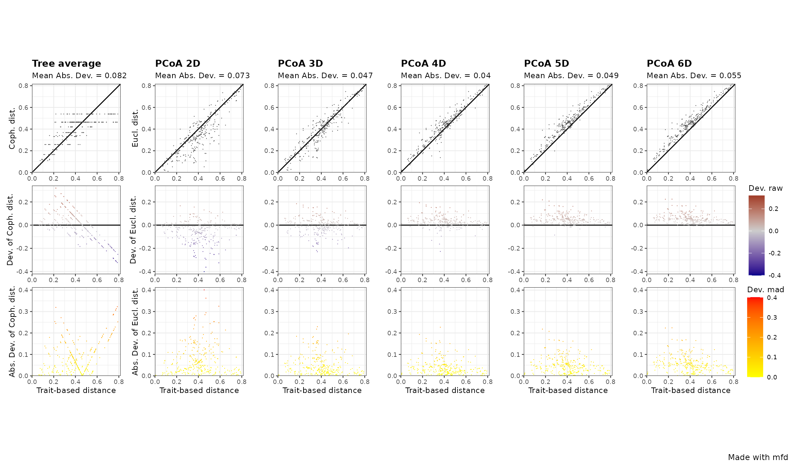
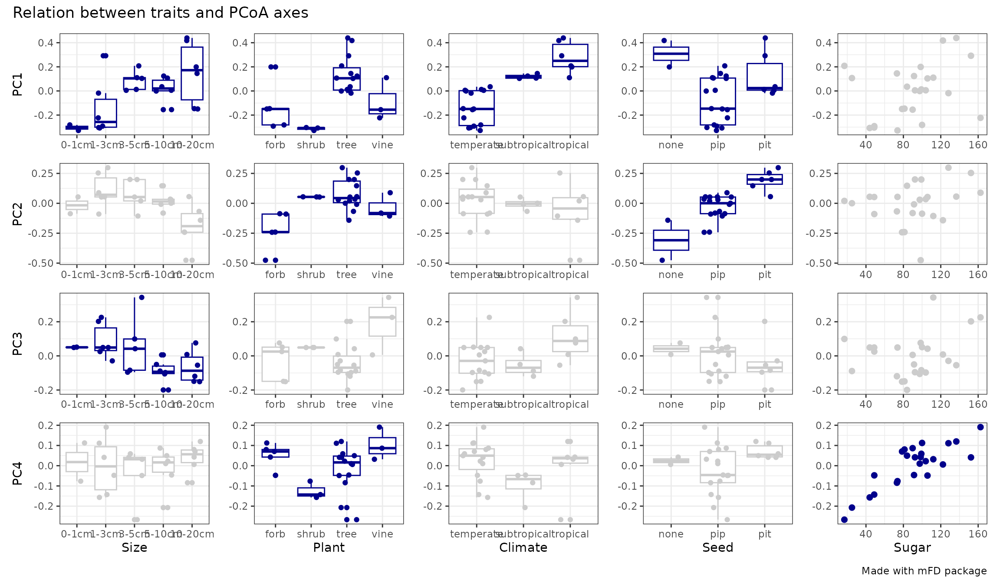
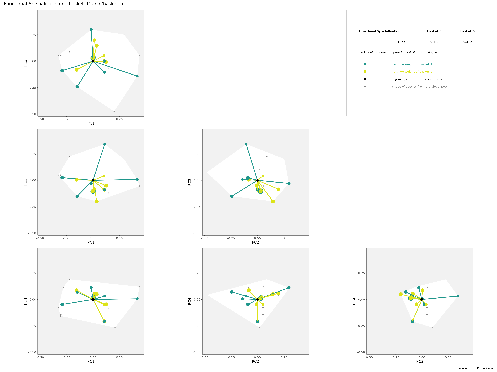
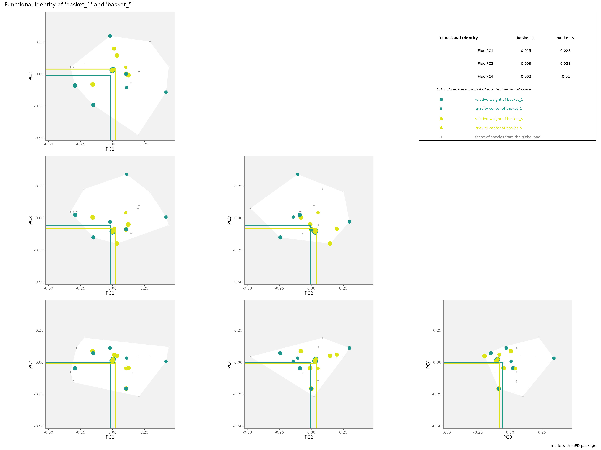
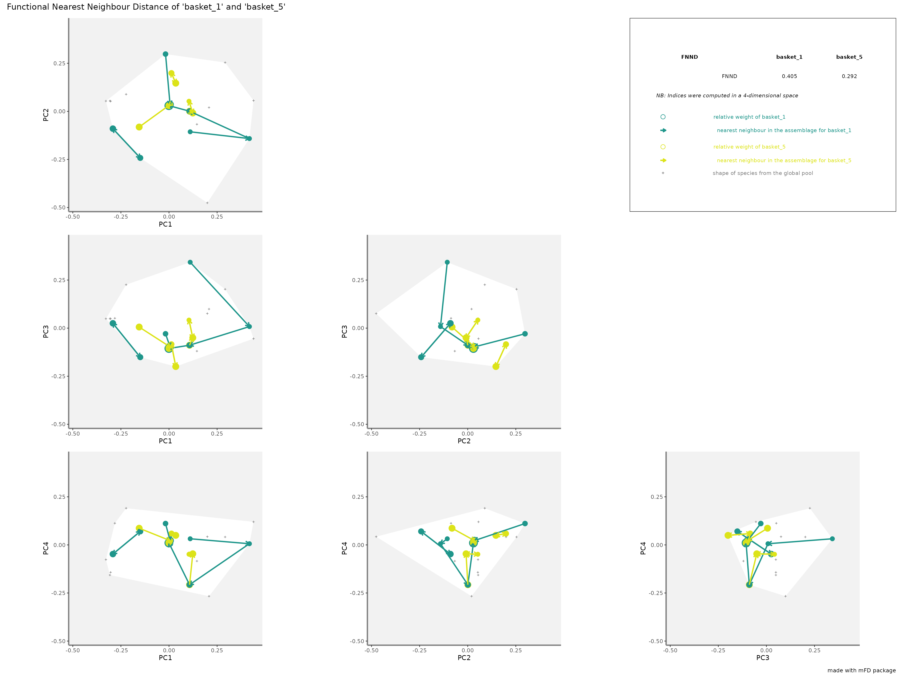

mFD: General Workflow
Camille Magneville
2022-11-09
Source:vignettes/mFD_general_workflow.Rmd
mFD_general_workflow.RmdAbout this tutorial
This tutorial describes the basic workflow showing how to compute step by step functional diversity (FD) indices in a multidimensional space using mFD package. Other functions are available and their uses are illustrated in others tutorials.
DATA The dataset used to illustrate this tutorial is a fruits dataset based on 25 types of fruits (i.e. species) distributed in 10 fruits baskets (i.e. assemblages). Each fruit is characterized by five traits values summarized in the following table:
| Trait name | Trait measurement | Trait type | Number of classes | Classes code | Unit |
|---|---|---|---|---|---|
| Size | Maximal diameter | Ordinal | 5 | 0-1 ; 1-3 ; 3-5 ; 5-10 ; 10-20 | cm |
| Plant | Growth form | Categorical | 4 | tree; shrub; vine; forb | NA |
| Climate | Climatic niche | Ordinal | 3 | temperate ; subtropical ; tropical | NA |
| Seed | Seed type | Ordinal | 3 | none ; pip ; pit | NA |
| Sugar | Sugar | Continuous | NA | NA | g/kg |
Overview of the functional framework
The use of the mFD package is based on two datasets:
- a data frame summarizing traits values for each species called
fruits_traitsin this tutorial
# Load data:
data("fruits_traits", package = "mFD")
# Remove fuzzy traits in this tutorial:
fruits_traits <- fruits_traits[ , -c(6:8)]
# Display the table:
knitr::kable(head(fruits_traits),
caption = "Species x traits data frame")| Size | Plant | Climate | Seed | Sugar | |
|---|---|---|---|---|---|
| apple | 5-10cm | tree | temperate | pip | 103.9 |
| apricot | 3-5cm | tree | temperate | pit | 92.4 |
| banana | 10-20cm | tree | tropical | none | 122.3 |
| currant | 0-1cm | shrub | temperate | pip | 73.7 |
| blackberry | 1-3cm | shrub | temperate | pip | 48.8 |
| blueberry | 0-1cm | forb | temperate | pip | 100.0 |
- a matrix summarizing species assemblages called
baskets_fruits_weightsin this tutorial. Weights in this matrix can be occurrence data, abundance, biomass, coverage, etc. This matrix must have assemblages names in rownames. The studied example works with biomass (i.e. grams of a fruit in a basket) and this matrix looks as follows:
# Load data:
data("baskets_fruits_weights", package = "mFD")
# Display the table:
knitr::kable(as.data.frame(baskets_fruits_weights[1:6, 1:6]),
centering = TRUE,
caption = "Species x assemblages matrix based on the **fruits** dataset")| apple | apricot | banana | currant | blackberry | blueberry | |
|---|---|---|---|---|---|---|
| basket_1 | 400 | 0 | 100 | 0 | 0 | 0 |
| basket_2 | 200 | 0 | 400 | 0 | 0 | 0 |
| basket_3 | 200 | 0 | 500 | 0 | 0 | 0 |
| basket_4 | 300 | 0 | 0 | 0 | 0 | 0 |
| basket_5 | 200 | 0 | 0 | 0 | 0 | 0 |
| basket_6 | 100 | 0 | 200 | 0 | 0 | 0 |
This tutorial will guide you through the main framework, illustrated in the flowchart below, step by step.

Basic framework of the mFD package
1. Know your data
1.1. What types of traits am I using?
The first thing to do before starting analyses is to know your data. To do so, you must be able to characterize the traits you are using (i.e. tell the package what type of traits you are using). That is why mFD package needs a data frame summarizing the type of each trait (i.e. each column of the fruits_traits data frame).
NB You need to set up a data frame with the same columns names as the below example:
# Load data:
data("fruits_traits_cat", package = "mFD")
# Remove fuzzy traits in this tutorial:
fruits_traits_cat <- fruits_traits_cat[-c(6:8), ]
# Thus remove the "fuzzy_name" column:
fruits_traits_cat <- fruits_traits_cat[ , -3]
# Display the table:
knitr::kable(head(fruits_traits_cat),
caption = "Traits types based on **fruits & baskets** dataset")| trait_name | trait_type |
|---|---|
| Size | O |
| Plant | N |
| Climate | O |
| Seed | O |
| Sugar | Q |
The first column contains traits name. The second column contains traits type following this code:
- N: nominal trait (factor variable)
- O: ordinal traits (ordered variable)
-
C: circular traits (integer values) (NB circular traits can not be used in
mFDfunction used to compute functional distance but ok for summary function and function to group species into Functional Entities) - Q: quantitative traits (numeric values)
-
F: fuzzy traits (described with several values defined in several columns in the
fruits_traitsdata frame)
You can add a third column if your dataset use fuzzy traits (then the third column summarizes to which fuzzy trait belongs each column that refers to a fuzzy trait) or if you want to give weight to each traits (then the third column summarizes traits weights).
NOTE The traits types dataframe thus has: two columns if no fuzzy traits and no weight given to traits (columns names: trait_name and trait_type) ; three columns if fuzzy traits (columns names: trait_name,trait_type and fuzzy_name) or if no fuzzy traits and weight given to traits (columns names: trait_name,trait_type and trait_weight)
1.2. Summarize my traits
The mFD package helps you to summarize your data using two distinct functions: mFD::sp.tr.summary() and mFD::asb.sp.summary().
The function mFD::sp.tr.summary() summarizes the fruits_traits dataframe and returns a list gathering several tables and lists:
tables with summaries for non-fuzzy & fuzzy traits. For non-fuzzy traits, the table sums up the number of species having each category for ordinal, nominal and circular traits or minimum/first quartile/median/mean/third quartile/maximum for continuous traits. For fuzzy traits, the table sums up minimum/first quartile/median/mean/third quartile/maximum for each category of each fuzzy trait.
a list gathering traits types for non-fuzzy traits
a list gathering modalities of non-continuous and non-fuzzy traits
USAGE
# Species traits summary:
fruits_traits_summ <- mFD::sp.tr.summary(
tr_cat = fruits_traits_cat,
sp_tr = fruits_traits,
stop_if_NA = TRUE)
fruits_traits_summ$"tr_types" # Traits types ## $Size
## [1] "ordered" "factor"
##
## $Plant
## [1] "factor"
##
## $Climate
## [1] "ordered" "factor"
##
## $Seed
## [1] "ordered" "factor"
##
## $Sugar
## [1] "numeric"
fruits_traits_summ$"mod_list" # Traits types for non-continuous and non-fuzzy traits## $Size
## [1] 5-10cm 3-5cm 10-20cm 0-1cm 1-3cm
## Levels: 0-1cm < 1-3cm < 3-5cm < 5-10cm < 10-20cm
##
## $Plant
## [1] tree shrub forb vine
## Levels: forb shrub tree vine
##
## $Climate
## [1] temperate tropical subtropical
## Levels: temperate < subtropical < tropical
##
## $Seed
## [1] pip pit none
## Levels: none < pip < pit
##
## $Sugar
## [1] 103.9 92.4 122.3 73.7 48.8 100.0 128.2 162.5 73.1 89.9 25.0 16.9
## [13] 152.3 136.6 78.6 91.4 112.0 83.9 97.5 98.5 99.2 44.0 48.9 105.8
## [25] 81.21.3. Summarize my assemblages
The second function helping you to summarize your data in the mFD package is mFD::asb.sp.summary(). It summarizes the baskets_fruits_weights matrix and returns a list gathering a matrix, a list and several vectors:
a matrix of species occurrences
a vector gathering species total biomass in all assemblages
a vector gathering the total abundance/biomass per assemblage
a vector gathering species richness per assemblage
a list gathering species names present in each assemblage
USAGE
# Summary of the assemblages * species dataframe:
asb_sp_fruits_summ <- mFD::asb.sp.summary(asb_sp_w = baskets_fruits_weights)
head(asb_sp_fruits_summ$"asb_sp_occ", 3) # Species occurrences for the first 3 assemblages## apple apricot banana currant blackberry blueberry cherry grape
## basket_1 1 0 1 0 0 0 1 0
## basket_2 1 0 1 0 0 0 1 0
## basket_3 1 0 1 0 0 0 1 0
## grapefruit kiwifruit lemon lime litchi mango melon orange
## basket_1 0 0 1 0 0 0 1 0
## basket_2 0 0 1 0 0 0 1 0
## basket_3 0 0 1 0 0 0 1 0
## passion_fruit peach pear pineapple plum raspberry strawberry tangerine
## basket_1 1 0 1 0 0 0 1 0
## basket_2 1 0 1 0 0 0 1 0
## basket_3 1 0 1 0 0 0 1 0
## water_melon
## basket_1 0
## basket_2 0
## basket_3 0
asb_sp_fruits_occ <- asb_sp_fruits_summ$"asb_sp_occ"
asb_sp_fruits_summ$"sp_tot_w" # Species total biomass in all assemblages## apple apricot banana currant blackberry
## 1850 200 1400 300 400
## blueberry cherry grape grapefruit kiwifruit
## 300 950 900 300 400
## lemon lime litchi mango melon
## 1200 400 300 700 1500
## orange passion_fruit peach pear pineapple
## 900 300 600 1900 1000
## plum raspberry strawberry tangerine water_melon
## 550 900 1650 300 800
asb_sp_fruits_summ$"asb_tot_w" # Total biomass per assemblage## basket_1 basket_2 basket_3 basket_4 basket_5 basket_6 basket_7 basket_8
## 2000 2000 2000 2000 2000 2000 2000 2000
## basket_9 basket_10
## 2000 2000
asb_sp_fruits_summ$"asb_sp_richn" # Species richness per assemblage## basket_1 basket_2 basket_3 basket_4 basket_5 basket_6 basket_7 basket_8
## 8 8 8 8 8 8 8 8
## basket_9 basket_10
## 8 8
asb_sp_fruits_summ$"asb_sp_nm"[[1]] # Names of species present in the first assemblage## apple banana cherry lemon melon
## 1 1 1 1 1
## passion_fruit pear strawberry
## 1 1 12. Gathering species into functional entities
If you have many species described by few categorical and ordinal traits only, then you might want to group them into Functional Entities (FE), i.e groups of species with same trait values when species are described with categorical and/or ordinal traits. It is particularly useful when using large datasets with “functionally similar” species.
In this tutorial, this function is not illustrated (FE for the fruits dataset have a single species) and thus functional diversity indices based on FE are not computed. You can have a look to the Compute Functional Diversity Indices based on Functional Entities tutorial for further analysis using FE.
mFD also allows the user to compute FD indices based on Functional Entities (FEs). Computed indices are Functional Redundancy (FRed), Functional OverRedundancy (FORed) and Functional Vulnerability (FVuln) (Mouillot et al. 2014). The fruits & baskets example does not allow to compute FEs, thus FD indices based on FEs can not be compute. Check the Compute functional diversity indices based on Functional Entities tutorial to see how to compute them.
3. Computing distances between species based on functional traits
The next step toward the computation of functional diversity indices is to estimate functional traits-based distances between species in order to build the functional space in which indices will be computed.
To compute trait-based distances, we will use the mFD::funct.dist() function which includes the following arguments:
USAGE
sp_dist_fruits <- mFD::funct.dist(
sp_tr = fruits_traits,
tr_cat = fruits_traits_cat,
metric = "gower",
scale_euclid = "scale_center",
ordinal_var = "classic",
weight_type = "equal",
stop_if_NA = TRUE)sp_tris the species x trait data frametr_catis the data frame summarizing trait type for each trait-
metricis a character string referring to the metric used to compute distances. Two metrics are available and the choice depends on your traits data:if all traits are continuous use the Euclidean distance (
metric = "euclidean") and check the Compute Functional Diversity Indices based on Only Continuous Traits tutorial which explains how to build a multidimensional space from traits through PCA analysis or considering directly each trait as a dimension.if you have non-continuous traits use the Gower distance (
metric = "gower") as this method allows traits weighting. This method can also deal with fuzzy traits.
scale_euclidis a character string referring to the way the user wants to scale euclidean traits. You can either chose to scale by rangerange, use the center transformationcenter, use the scale transformationscale, use the scale-center transformationscale_centeror you can chose not to scalenoscale.ordinal_varis a character string specifying the method to be used for ordinal variables (i.e. ordered). You can either chose to treat ordinal variables as continuous variables (with"classic"option) or to treat ordinal variables as ranks (withmetricorpodanioptions, seemFD::funct.dist()help file for details).weight_typeis a character string referring to the type of method to weight traits. You can either chose to define weights using thetr_catdataframe (cf step 1.1) (useroption) or you can chose to give the same weight to all traits (equaloption). (NB UsingmFD, you can not define weights for fuzzy traits, usegawdispackage instead)stop_if_NAis a logical value to stop or not the process if thesp_trdata frame contains NA. If thesp_trdata frame containsNAyou can either chose to compute anyway functional distances (but keep in mind that Functional measures are sensitive to missing traits!) or you can delete species with missing or extrapolate missing traits (see Johnson et al. (2020)).
NB If your data gather a high number of species and/or traits, this function might take time to run (and you might have memory issues).
This function returns a dist object with traits-based distances between all pairs of species:
round(sp_dist_fruits, 3) # Output of the function mFD::funct.dist()## apple apricot banana currant blackberry blueberry cherry grape
## apricot 0.166
## banana 0.375 0.541
## currant 0.391 0.426 0.767
## blackberry 0.376 0.410 0.751 0.084
## blueberry 0.355 0.410 0.731 0.236 0.320
## cherry 0.233 0.099 0.558 0.425 0.409 0.389
## grape 0.380 0.446 0.705 0.372 0.356 0.336 0.347
## grapefruit 0.192 0.327 0.268 0.501 0.483 0.537 0.426 0.573
## kiwifruit 0.219 0.353 0.595 0.372 0.356 0.364 0.453 0.200
## lemon 0.208 0.343 0.384 0.517 0.433 0.553 0.442 0.589
## lime 0.370 0.404 0.345 0.578 0.494 0.614 0.503 0.650
## litchi 0.466 0.332 0.391 0.658 0.642 0.622 0.233 0.514
## mango 0.395 0.361 0.220 0.786 0.771 0.750 0.362 0.686
## melon 0.285 0.419 0.560 0.407 0.391 0.229 0.518 0.465
## orange 0.117 0.251 0.292 0.474 0.459 0.462 0.351 0.498
## passion_fruit 0.461 0.527 0.414 0.553 0.537 0.516 0.572 0.319
## peach 0.127 0.062 0.503 0.464 0.448 0.472 0.161 0.508
## pear 0.009 0.157 0.384 0.383 0.367 0.353 0.242 0.389
## pineapple 0.557 0.708 0.233 0.734 0.718 0.502 0.791 0.738
## plum 0.156 0.009 0.532 0.435 0.419 0.401 0.090 0.437
## raspberry 0.382 0.416 0.758 0.091 0.007 0.327 0.416 0.363
## strawberry 0.376 0.410 0.751 0.284 0.200 0.120 0.409 0.356
## tangerine 0.153 0.218 0.323 0.444 0.428 0.408 0.281 0.428
## water_melon 0.281 0.415 0.556 0.410 0.395 0.226 0.515 0.462
## grapefruit kiwifruit lemon lime litchi mango melon orange
## apricot
## banana
## currant
## blackberry
## blueberry
## cherry
## grape
## grapefruit
## kiwifruit 0.373
## lemon 0.116 0.389
## lime 0.277 0.550 0.161
## litchi 0.459 0.686 0.475 0.336
## mango 0.287 0.614 0.403 0.364 0.172
## melon 0.308 0.266 0.424 0.585 0.751 0.580
## orange 0.075 0.302 0.091 0.252 0.384 0.312 0.368
## passion_fruit 0.453 0.280 0.470 0.331 0.405 0.434 0.546 0.378
## peach 0.265 0.308 0.281 0.442 0.394 0.322 0.357 0.210
## pear 0.184 0.210 0.200 0.361 0.475 0.404 0.276 0.108
## pineapple 0.435 0.562 0.551 0.512 0.624 0.452 0.327 0.460
## plum 0.336 0.363 0.352 0.413 0.323 0.351 0.428 0.261
## raspberry 0.490 0.363 0.426 0.487 0.649 0.777 0.398 0.465
## strawberry 0.483 0.356 0.433 0.494 0.642 0.770 0.191 0.458
## tangerine 0.145 0.372 0.161 0.222 0.314 0.342 0.437 0.070
## water_melon 0.311 0.262 0.427 0.588 0.748 0.576 0.004 0.364
## passion_fruit peach pear pineapple plum raspberry strawberry
## apricot
## banana
## currant
## blackberry
## blueberry
## cherry
## grape
## grapefruit
## kiwifruit
## lemon
## lime
## litchi
## mango
## melon
## orange
## passion_fruit
## peach 0.589
## pear 0.470 0.119
## pineapple 0.419 0.670 0.551
## plum 0.518 0.071 0.152 0.701
## raspberry 0.543 0.455 0.373 0.725 0.426
## strawberry 0.537 0.448 0.367 0.518 0.419 0.207
## tangerine 0.309 0.280 0.161 0.510 0.209 0.435 0.428
## water_melon 0.542 0.354 0.272 0.324 0.425 0.401 0.194
## tangerine
## apricot
## banana
## currant
## blackberry
## blueberry
## cherry
## grape
## grapefruit
## kiwifruit
## lemon
## lime
## litchi
## mango
## melon
## orange
## passion_fruit
## peach
## pear
## pineapple
## plum
## raspberry
## strawberry
## tangerine
## water_melon 0.4344. Computing functional spaces & their quality
4.1. Compute multimensional functional spaces and assess their quality
In order to generate a multidimensional space in which functional diversity indices are computed (Mouillot et al. 2013, we will perform a PCoA using the trait-based distances (and if required a functional dendrogram). mFD evaluates the quality of PCoA-based multidimensional spaces according to the deviation between trait-based distances and distances in the functional space (extension of Maire et al. (2015) framework). For that, we will use the mFD::quality.fspaces() function:
USAGE
fspaces_quality_fruits <- mFD::quality.fspaces(
sp_dist = sp_dist_fruits,
maxdim_pcoa = 10,
deviation_weighting = "absolute",
fdist_scaling = FALSE,
fdendro = "average")## Registered S3 method overwritten by 'dendextend':
## method from
## rev.hclust vegansp_distis thedistobject with pairwise trait-based distance between species as computed in step 3maxdim_pcoais the maximum number of PCoA axes to consider to build multidimensional spaces. Actually, the maximum number of dimensions considered depends on the number of PCoA axes with positive eigenvalues.-
deviation_weightingrefers to the method(s) used to weight the difference between species pairwise distances in the functional space and trait-based distances. You can chose between:-
absolute: absolute differences are used to compute the mean absolute deviation (mad) . It reflects the actual magnitude of errors that will affect FD metrics. -
squared: squared differences are used to compute the root of mean square deviation (rmsd). This weighting puts more weight to the large deviations between trait-based distances and distances in the functional space. misplaced in the functional space. - Both quality metrics can be used with
deviation_weighting = c("absolute", "squared").
-
fdist_scalingspecifies whether distances in the functional space should be scaled before computing differences with trait-based distances. Scaling ensures that trait-based distances and distances in the functional space have the same maximum. Scaling distances implies that the quality of the functional space accounts for congruence in distances rather than their equality.
NOTE The combination of deviation_weighting and fdist_scaling arguments leads to four possible quality metrics: mad, rmsd, mad_scaled and rmsd_scaled
-
fdendrospecifies the clustering algorithm to compute a functional dendrogram.NULLmeans no dendrogram computed. The chosen algorithm must be one of the method recognized by thestats::hclust()function from thestatspackage.
This function returns a list various objects:
- a data frame gathering for each space (in rows), values of quality metric(s) (in columns)
round(fspaces_quality_fruits$"quality_fspaces", 3) # Quality metrics of spaces## mad
## pcoa_1d 0.150
## pcoa_2d 0.073
## pcoa_3d 0.047
## pcoa_4d 0.040
## pcoa_5d 0.049
## pcoa_6d 0.055
## pcoa_7d 0.060
## pcoa_8d 0.064
## pcoa_9d 0.065
## pcoa_10d 0.065
## tree_average 0.082- lists with details required for other tasks in step 4 to plot functional space quality and in step 5 to plot functional space.
NOTE The space with the best quality has the lowest quality metric. Here, thanks to mad values, we can see that the 4D space is the best one. That is why the following of this tutorial will use this multidimensional space.
4.2. Illustrating the quality of the selected functional spaces
With the mFD package, it is possible to illustrate the quality of PCoA-based multidimensional spaces according to deviation between trait-based distances and distances in the functional space. For that, we use the mFD::quality.fspace.plot() function with the following arguments:
USAGE
mFD::quality.fspaces.plot(
fspaces_quality = fspaces_quality_fruits,
quality_metric = "mad",
fspaces_plot = c("tree_average", "pcoa_2d", "pcoa_3d",
"pcoa_4d", "pcoa_5d", "pcoa_6d"),
name_file = NULL,
range_dist = NULL,
range_dev = NULL,
range_qdev = NULL,
gradient_deviation = c(neg = "darkblue", nul = "grey80", pos = "darkred"),
gradient_deviation_quality = c(low = "yellow", high = "red"),
x_lab = "Trait-based distance")fspaces_qualityis the output of themFD::quality.fspaces()function (step 4.1).quality_metricrefers to the quality metric used. It should be one of the column name(s) of the table gathering quality metric values (output ofmFD::quality.fspaces()calledquality_fspaces) (here:fspaces_quality_fruits$quality_fspaces) Thus it can be:mad,rmsd,mad_scaledorrmsd_scaled(see step 4.1)fspaces_plotrefers to the names of spaces for which quality has to be illustrated (up to 10). Names are those used in the output ofmFD::quality.fspaces()function showing the values of the quality metric.name_filerefers to the name of file to save (without extension) if the user wants to save the figure. If the user only wants the plot to be displayed, thenname_file = NULL.range_dist,range_dev,range_qdevare arguments to set ranges of panel axes (check function help for further information).gradient_deviationandgradient_deviation_qualityare arguments to set points colors (check function help for further information).xlabis a parameter to set x-axis label.
This function generates a figure with three panels (in rows) for each selected functional space (in columns). Each column represents a functional space, the value of the quality metric is written on the top of each column. The x-axis of all panels represents trait-based distances. The y-axis is different for each row:
- on the first (top) row, the y-axis represents species functional distances in the multidimensional space. Thus, the closer species are to the 1:1 line, the better distances in the functional space fit trait-based ones.
- on the second row, the y-axis shows the raw deviation of species distances in the functional space compared to trait-based distances. Thus, the raw deviation reflects the distance to the 1:1 line.
- on the third row, the y-axis shows the absolute or squared deviation of the (“scaled”) distance in the functional space. It is the deviation that is taken into account for computing the quality metric.
mFD::quality.fspaces.plot(
fspaces_quality = fspaces_quality_fruits,
quality_metric = "mad",
fspaces_plot = c("tree_average", "pcoa_2d", "pcoa_3d",
"pcoa_4d", "pcoa_5d", "pcoa_6d"),
name_file = NULL,
range_dist = NULL,
range_dev = NULL,
range_qdev = NULL,
gradient_deviation = c(neg = "darkblue", nul = "grey80", pos = "darkred"),
gradient_deviation_quality = c(low = "yellow", high = "red"),
x_lab = "Trait-based distance")
For the 2D space, on the top row there are a lot of points below the 1:1 lines, meaning that distances are overestimated in this multidimensional space. Looking at panels, we can see that the 4D space is the one in which points are the closest to the 1:1 line on the top row,and the closest to the x-axis for the two bottom rows, which reflects a better quality compared to other functional spaces / dendrogram. For the dendrogram, we can see on the top row that species pairs arrange in horizontal lines, meaning that different trait-based distances have then the same cophenetic distance on the dendrogram.
NOTE To know more and better understand how to interpret quality of functional spaces, you should read the Compute and Interpret Quality of Functional Space tutorial.
5. Test correlation between functional axes and traits
mFD allows to test for correlations between traits and functional axes and then illustrate possible correlations. For continuous traits, a linear model is computed and r2 and associated p-value are returned. For non-continuous traits, a Kruskal-Wallis test is computed and eta2 statistic is returned. The function mFD::traits.faxes.cor() allows to test and plot correlation and needs the following arguments:
-
sp_tris the species x traits data frame -
sp_faxes_coordis a matrix of species coordinates taken from the outputs of themFD::quality.fspaces()function with columns representing axes on which functional space must be computed. For instance, in this tutorial, we will plot the functional space for 4 and 10 dimensions (cf. the two examples below). The wholesp_faxes_coordcan be retrieved through the output of themFD::quality.fspaces()function:
sp_faxes_coord_fruits <- fspaces_quality_fruits$"details_fspaces"$"sp_pc_coord"-
plotis a logical value indicating whether correlations should be illustrated or not. If this option is set toTRUE, traits-axis relationships are plotted through scatterplot for continuous traits and boxplot for non-continuous traits.
mFD::traits.faxes.cor works as follows:
USAGE
fruits_tr_faxes <- mFD::traits.faxes.cor(
sp_tr = fruits_traits,
sp_faxes_coord = sp_faxes_coord_fruits[ , c("PC1", "PC2", "PC3", "PC4")],
plot = TRUE)
We can print only traits with significant effect on position along one of the axis and look at the plots:
# Print traits with significant effect:
fruits_tr_faxes$"tr_faxes_stat"[which(fruits_tr_faxes$"tr_faxes_stat"$"p.value" < 0.05), ]## trait axis test stat value p.value
## 1 Size PC1 Kruskal-Wallis eta2 0.308 0.0377
## 3 Size PC3 Kruskal-Wallis eta2 0.326 0.0325
## 5 Plant PC1 Kruskal-Wallis eta2 0.471 0.0049
## 6 Plant PC2 Kruskal-Wallis eta2 0.382 0.0116
## 8 Plant PC4 Kruskal-Wallis eta2 0.264 0.0360
## 9 Climate PC1 Kruskal-Wallis eta2 0.731 0.0001
## 13 Seed PC1 Kruskal-Wallis eta2 0.201 0.0402
## 14 Seed PC2 Kruskal-Wallis eta2 0.593 0.0005
## 20 Sugar PC4 Linear Model r2 0.682 0.0000
# Return plots:
fruits_tr_faxes$"tr_faxes_plot"
We can thus see that PC1 is mostly driven by Climate (temperate on the left and tropical on the right) and Plant Type (forb & shrub on the left vs tree & vine on the right) and Size (large fruits on the right) with weaker influence of Seed (eta2 < 0.25). Then, PC2 is mostly driven by Seed (no seed on the left and pit seed on the right) with weaker influence of Plant Type. PC3 is driven by only one trait, Size. And finally PC4 is mostly driven by Sugar (high sugar content on the right and low sugar content on the left) with a weaker influence of Plant Type.
6. Plot functional space
Once the user has selected the dimensionality of the functional space, mFD allows you to plot the given multidimensional functional space and the position of species in all 2-dimensions spaces made by pairs of axes.
The mFD::funct.space.plot() function allows to illustrate the position of all species along pairs of space axes.
This function allows to plot with many possibilities to change colors/shapes of each plotted element. Here are listed the main arguments:
-
sp_faxes_coordis a matrix of species coordinates taken from the outputs of themFD::quality.fspaces()function with columns representing axes on which functional space must be computed. For instance, in this tutorial, we will plot the functional space for 4 and 10 dimensions (cf. the two examples below). The wholesp_faxes_coordcan be retrieved through the output of themFD::quality.fspaces()function:
sp_faxes_coord_fruits <- fspaces_quality_fruits$"details_fspaces"$"sp_pc_coord"faxesis a vector containing names of axes to plot. If set toNULL, the first four functional axes will be plotted.faxes_nmis a vector containing labels offaxes(following faxes vector rank). IfNULL, labels followfaxesvector names.range_faxesis a vector to complete if the user wants to set specific limits for functional axes. Ifrange_faxes = c(NA, NA), the range is computed according to the range of values among all axes.plot_chis a logical value used to draw or not the 2D convex-hull filled by the global pool of species. Color, fill and opacity of the convex hull can be chosen through other inputs , please refer to the function’s help.plot_sp_nmis a vector containing species names to plot. IfNULL, no species names plotted. Name size, color and font can be chosen through other inputs, please refer to the function’s help.plot_verticesis a logical value used to plot or not vertices with a different shape than other species. Be careful: these representations are 2D representations, thus vertices of the convex-hull in the n-multidimensional space can be close to the center of the hull projected in 2D. Color, fill, shape and size of vertices can be chosen through other inputs, please refer to the function’s help.color_bgis a R color or an hexadecimal color code referring to the color of the background of the plot.other inputs are used to chose color, fill, size, and shape of species from the global pool, please refer to the function’s help.
check_inputis a recurrent argument in themFDpackage. It defines whether inputs should be checked before computation or not. Possible error messages will thus be more understandable for the user than R error messages (Recommendation: set it asTRUE).
Here are the plots for the fruits & baskets dataset for the first four PCoA axis:
USAGE
big_plot <- mFD::funct.space.plot(
sp_faxes_coord = sp_faxes_coord_fruits[ , c("PC1", "PC2", "PC3", "PC4")],
faxes = c("PC1", "PC2", "PC3", "PC4"),
name_file = NULL,
faxes_nm = NULL,
range_faxes = c(NA, NA),
color_bg = "grey95",
color_pool = "darkgreen",
fill_pool = "white",
shape_pool = 21,
size_pool = 1,
plot_ch = TRUE,
color_ch = "black",
fill_ch = "white",
alpha_ch = 0.5,
plot_vertices = TRUE,
color_vert = "blueviolet",
fill_vert = "blueviolet",
shape_vert = 23,
size_vert = 1,
plot_sp_nm = NULL,
nm_size = 3,
nm_color = "black",
nm_fontface = "plain",
check_input = TRUE)Here, the convex-hull of the species pool is plotted in white and axis have the same range to get rid of bias based on different axis scales. Species beign vertices of the 4D convex hull are in purple.
Here are the plots for the fruits & baskets dataset for the first ten PCoA axis:
big_plot <- mFD::funct.space.plot(
sp_faxes_coord = sp_faxes_coord_fruits,
faxes = NULL,
name_file = NULL,
faxes_nm = NULL,
range_faxes = c(NA, NA),
color_bg = "grey95",
color_pool = "darkgreen",
fill_pool = "white",
shape_pool = 21,
size_pool = 1,
plot_ch = TRUE,
color_ch = "black",
fill_ch = "white",
alpha_ch = 0.5,
plot_vertices = TRUE,
color_vert = "blueviolet",
fill_vert = "blueviolet",
shape_vert = 23,
size_vert = 1,
plot_sp_nm = NULL,
nm_size = 3,
nm_color = "black",
nm_fontface = "plain",
check_input = TRUE)
# Plot the graph with all pairs of axes:
big_plot$patchworkHere, all the species are vertices compared with the last example with only four dimensions.
7. Compute functional diversity indices & plot them
7.1. Functional alpha diversity indices in a multidimensional space
The mFD::alpha.fd.multidim() function allows computing many alpha FD indices:
USAGE
alpha_fd_indices_fruits <- mFD::alpha.fd.multidim(
sp_faxes_coord = sp_faxes_coord_fruits[ , c("PC1", "PC2", "PC3", "PC4")],
asb_sp_w = baskets_fruits_weights,
ind_vect = c("fdis", "fmpd", "fnnd", "feve", "fric", "fdiv", "fori",
"fspe", "fide"),
scaling = TRUE,
check_input = TRUE,
details_returned = TRUE)## basket_1 done 10%## basket_2 done 20%## basket_3 done 30%## basket_4 done 40%## basket_5 done 50%## basket_6 done 60%## basket_7 done 70%## basket_8 done 80%## basket_9 done 90%## basket_10 done 100%The arguments and their use are listed below:
sp_faxes_coordis the species coordinates matrix. This dataframe gathers only axis of the functional space you have chosen based on step 4.asb_sp_wis the matrix linking species and assemblages they belong to (summarized in step 1).-
ind_vectis a vector with names of diversity functional indices to compute. FD indices computed in themFDpackage can be (explanations based on (Mouillot et al. 2013):FDisFunctional Dispersion: the biomass weighted deviation of species traits values from the center of the functional space filled by the assemblage i.e. the biomass-weighted mean distance to the biomass-weighted mean trait values of the assemblage.FRicFunctional Richness: the proportion of functional space filled by species of the studied assemblage, i.e. the volume inside the convex-hull shaping species. To computeFRicthe number of species must be at least higher than the number of functional axis + 1.FDivFunctional Divergence: the proportion of the biomass supported by the species with the most extreme functional traits i.e. the ones located close to the edge of the convex-hull filled by the assemblage.FEveFunctional Evenness: the regularity of biomass distribution in the functional space using the Minimum Spanning Tree linking all species present in the assemblage.FSpeFunctional Specialization: the biomass weighted mean distance to the mean position of species from the global pool (present in all assemblages).FMPDFunctional Mean Pairwise Distance: the mean weighted distance between all species pairs.FNNDFunctional Mean Nearest Neighbour Distance: the weighted distance to the nearest neighbor within the assemblage.FIdeFunctional Identity: the mean traits values for the assemblage.FIdeis always computed whenFDisis computed.FOriFunctional Originality: the weighted mean distance to the nearest species from the global species pool.
scalingis a logical value indicating whether indices should be scaled between 0 and 1. If scaling is to be done, this argument must be set toTRUE.check_inputis a recurrent argument in themFDpackage. It defines whether inputs should be checked before computation or not. Possible error messages will thus be more understandable for the user than R error messages (Recommendation: set it asTRUE).details_returnedis used if the user wants to store information that are used in graphical functions. If the user wants to plot FD indices, thendetails_returnedmust be set toTRUE.
NB Use lowercase letters to enter FD indices names
The function has two main outputs:
- a data frame gathering indices values in each assemblage (for
FIdevalues, there are as many columns as there are axes to the studied functional space).
fd_ind_values_fruits <- alpha_fd_indices_fruits$"functional_diversity_indices"
fd_ind_values_fruits## sp_richn fdis fmpd fnnd feve fric fdiv
## basket_1 8 0.4763773 0.6255537 0.4050890 0.565326 0.162830681 0.5514453
## basket_2 8 0.7207823 0.7204459 0.6604092 0.754999 0.162830681 0.8064809
## basket_3 8 0.7416008 0.7274367 0.6748312 0.805534 0.162830681 0.8089535
## basket_4 8 0.2958614 0.3426258 0.2258304 0.759802 0.007880372 0.6080409
## basket_5 8 0.3673992 0.3782650 0.2922436 0.843120 0.007880372 0.7288912
## basket_6 8 0.8001980 0.7838356 0.7295674 0.814829 0.147936148 0.8937934
## basket_7 8 0.8121314 0.8092985 0.7566157 0.827061 0.147936148 0.8989094
## basket_8 8 0.4678159 0.5182996 0.3618776 0.566161 0.036480112 0.7113688
## basket_9 8 0.5577452 0.5566262 0.4563761 0.675735 0.036480112 0.7787237
## basket_10 8 0.5505783 0.5501381 0.4118548 0.660085 0.025774304 0.7741681
## fori fspe fide_PC1 fide_PC2 fide_PC3 fide_PC4
## basket_1 0.2024008 0.4127138 -0.01473662 -0.009461738 -0.05670043 -0.001823969
## basket_2 0.2788762 0.5781232 0.01887361 -0.061601373 -0.04427402 0.021249327
## basket_3 0.3067367 0.5888104 0.04724418 -0.056571400 -0.03631846 0.018045257
## basket_4 0.1766279 0.3106937 0.03994897 0.052581211 -0.08413271 -0.001343112
## basket_5 0.2165945 0.3488358 0.02349573 0.039069220 -0.08187248 -0.010262902
## basket_6 0.6071369 0.7930809 0.24320913 -0.114434642 0.01394977 0.025500282
## basket_7 0.4841824 0.7443406 0.13341179 -0.183609095 -0.01782549 0.021494300
## basket_8 0.2538185 0.6363814 -0.24497368 0.036194656 0.04748935 -0.038827673
## basket_9 0.3126927 0.6309078 -0.21021559 0.029339706 0.05516746 -0.041392184
## basket_10 0.1799705 0.4587432 -0.05375867 -0.005743348 -0.05649324 0.041191011- a details list of data frames and sublists gathering information such as coordinates of centroids, distances and identity of the nearest neighbour, distances to the centroid, etc. The user does not have to directly use it but it will be useful if FD indices are then plotted. It can be retrieved through:
details_list_fruits <- alpha_fd_indices_fruits$"details"Then, you can plot functional indices using the mFD::alpha.multidim.plot() function as follows:
USAGE
plots_alpha <- mFD::alpha.multidim.plot(
output_alpha_fd_multidim = alpha_fd_indices_fruits,
plot_asb_nm = c("basket_1", "basket_5"),
ind_nm = c("fdis", "fide", "fnnd", "feve", "fric",
"fdiv", "fori", "fspe"),
faxes = NULL,
faxes_nm = NULL,
range_faxes = c(NA, NA),
color_bg = "grey95",
shape_sp = c(pool = 3, asb1 = 21, asb2 = 21),
size_sp = c(pool = 0.7, asb1 = 1, asb2 = 1),
color_sp = c(pool = "grey50", asb1 = "#1F968BFF", asb2 = "#DCE319FF"),
color_vert = c(pool = "grey50", asb1 = "#1F968BFF", asb2 = "#DCE319FF"),
fill_sp = c(pool = NA, asb1 = "#1F968BFF", asb2 = "#DCE319FF"),
fill_vert = c(pool = NA, asb1 = "#1F968BFF", asb2 = "#DCE319FF"),
color_ch = c(pool = NA, asb1 = "#1F968BFF", asb2 = "#DCE319FF"),
fill_ch = c(pool = "white", asb1 = "#1F968BFF", asb2 = "#DCE319FF"),
alpha_ch = c(pool = 1, asb1 = 0.3, asb2 = 0.3),
shape_centroid_fdis = c(asb1 = 22, asb2 = 24),
shape_centroid_fdiv = c(asb1 = 22, asb2 = 24),
shape_centroid_fspe = 23,
color_centroid_fspe = "black",
size_sp_nm = 3,
color_sp_nm = "black",
plot_sp_nm = NULL,
fontface_sp_nm = "plain",
save_file = FALSE,
check_input = TRUE) As you can see, this function has a lot of arguments: most of them are graphical arguments allowing the user to chose colors, shapes, sizes, scales, etc. This tutorial only presents main arguments. To learn about the use of graphical arguments, check the function help file. The main arguments of this function are listed below:
output_alpha_fd_multidimis the output of the `mFD::alpha.fd.multidim()function.plot_asb_nmis a vector gathering name(s) of assemblage(s) to plot.ind_vectis a vector gathering FD indices to plot. Plots are available forFDis,FIde,FEve,FRic,FDiv,FOri,FSpe, andFNND.faxesis a vector containing names of axes to plot. You can only plot from two to four axes labels for graphical reasons.faxes_nmis a vector with axes labels if the user ants different axes labels thanfaxesones.range_faxesis a vector with minimum and maximum values for axes. Ifrange_faxes = c(NA, NA), the range is computed according to the range of values among all axes, all axes having thus the same range. To have a fair representation of species positions in all plots, all axes must have the same range.plot_sp_nmis a vector containing species names to plot. IfNULL, then no name is plotted.size, color, fill, and shape arguments for each component of the graphs i.e. species of the global pool, species of the studied assemblage(s), vertices, centroids and segments. If you have to plot two assemblages, then inputs should be formatted as follow:
c(pool = ..., asb1 = ..., asb2 = ...)for inputs used for global pool and studied assemblages andc(asb1 = ..., asb2 = ...)for inputs used for studied assemblages only.check_inputis a recurrent argument inmFD. It defines whether inputs should be checked before computation or not. Possible error messages will thus be more understandable for the user than R error messages (Recommendation: set it asTRUE.
Then, using these arguments, here are the output plots for the fruits & baskets dataset:
-
FRicrepresentation: the colored shapes reflect the convex-hull of the studied assemblages and the white shape reflects the convex-hull of the global pool of species:
plots_alpha$"fric"$"patchwork"-
FDivrepresentation: the gravity centers of vertices (i.e. species with the most extreme functional traits) of each assemblages are plotted as a square and a triangle. Species of each assemblage have different size given their relative weight into the assemblage.
plots_alpha$"fdiv"$"patchwork"-
FSperepresentation: colored traits represent distances of each species from a given assemblage to the center of gravity of the global pool (i.e center of the functional space). the center of gravity is plotted with a purple diamond. Species of each assemblage have different size given their relative weight into the assemblage.
plots_alpha$"fspe"$"patchwork"
-
FDisrepresentation: colored traits represent distances of each species from a given assemblage to the center of gravity of species of the assemblage (defined by FIde values). The center of gravity of each assemblage is plotted using a square and a triangle. Species of each assemblage havedifferent size given their relative weight into the assemblage.
plots_alpha$"fdis"$"patchwork"-
FIderepresentation:colored lines refer to the weighted average position of species of each assemblage along each axis. Species of each assemblage have different size given their relative weight into the assemblage.
plots_alpha$"fide"$"patchwork"
-
FEverepresentation: colored traits represent the Minimum Spanning Tree linking species of each assemblage. Species of each assemblage have different size given their relative weight into the assemblage.
plots_alpha$"feve"$"patchwork"-
FOrirepresentation: colored arrows represent the distances of each species from each assemblage to the nearest species in the global species pool. Species of each assemblage have different size given their relative weight into the assemblage.
plots_alpha$"fori"$"patchwork"-
FNNDrepresentation: colored arrows represent the distances of each species from each assemblage to the nearest species in the studied assemblage. Species of each assemblage have different size given their relative weight into the assemblage.
plots_alpha$"fnnd"$"patchwork"
7.2. Functional beta diversity indices based on multidimensional space
NOTE: Some Mac OS X 10.15 may encounter some issues with the beta_*() functions.
mFD package allows you to compute beta diversity indices for each assemblage pairs following Villeger et al. 2013. For that we will use the mFD::beta.fd.multidim() function.
NOTE This function can compute two families of functional beta diversity indices, either Jaccard or Sorensen.
In this example, we will use Jaccard index. For each assemblages pair, the dissimilarity index is decomposed into two additive components: turnover and nestedness-resultant. NB The turnover component is the highest if there is no shared traits combination between the two assemblages. The nestedness component is the highest if one assemblage hosts a small subset of the functional strategies present in the other.
The mFD::beta.fd.multidim() function has the main following arguments:
USAGE
beta_fd_indices_fruits <- mFD::beta.fd.multidim(
sp_faxes_coord = sp_faxes_coord_fruits[ , c("PC1", "PC2", "PC3", "PC4")],
asb_sp_occ = asb_sp_fruits_occ,
check_input = TRUE,
beta_family = c("Jaccard"),
details_returned = TRUE)sp_faxes_coordis the species coordinates matrix. This dataframe gathers only axis of the functional space you have chosen based on step 4.asb_sp_occis the matrix of occurrence (coded as 0/1) of species assemblages (summarized in step 1).check_inputis a recurrent argument in themFDpackage. It defines whether inputs should be checked before computation or not. Possible error messages will thus be more understandable for the user than R error messages (Recommendation: set it asTRUE.beta_familya character string for the type of beta-diversity index to compute, it can either beJaccardorSorensen.details_returnedis a logical value indicating whether details of outputs must be stored. It should be stored if you plan to use the graphical function to illustrate beta diversity indices thereafter.There are also other arguments for parallelisation options. Check the function help file for more explanation.
The function returns a list containing:
- a dist object with beta indices values for each pair of assemblages
- a list containing details such as inputs, vertices of the global pool and of each assemblage and FRic values for each assemblage
a vector containing the
FRicvalue for each assemblage retrieved through thedetails_betalista list of vectors containing names of species being vertices of the convex hull for each assemblage retrieved through the
details_betalist
Then, the package allows the user to illustrate functional beta-diversity indices for a pair of assemblages in a multidimensional space using the mFD::beta.multidim.plot() function. The output of this function is a figure showing the overlap between convex hulls shaping each of the two species assemblages.
The plotting function has a large number of arguments, allowing the user to chose graphical options. Arguments are listed below:
USAGE
beta_plot_fruits <- mFD::beta.multidim.plot(
output_beta_fd_multidim = beta_fd_indices_fruits,
plot_asb_nm = c("basket_1", "basket_4"),
beta_family = c("Jaccard"),
plot_sp_nm = c("apple", "lemon", "pear"),
faxes = paste0("PC", 1:4),
name_file = NULL,
faxes_nm = NULL,
range_faxes = c(NA, NA),
color_bg = "grey95",
shape_sp = c("pool" = 3.0, asb1 = 22, asb2 = 21),
size_sp = c("pool" = 0.8, asb1 = 1, asb2 = 1),
color_sp = c("pool" = "grey50", asb1 = "blue", asb2 = "red"),
fill_sp = c("pool" = NA, asb1 = "white", asb2 = "white"),
fill_vert = c("pool" = NA, asb1 = "blue", asb2 = "red"),
color_ch = c("pool" = NA, asb1 = "blue", asb2 = "red"),
fill_ch = c("pool" = "white", asb1 = "blue", asb2 = "red"),
alpha_ch = c("pool" = 1, asb1 = 0.3, asb2 = 0.3),
nm_size = 3,
nm_color = "black",
nm_fontface = "plain",
check_input = TRUE)output_beta_fd_multidimis the output of themFD::beta.fd.multidim()function retrieved before asbeta_fd_indices.plot_asb_nmis a vector containing the name of the two assemblages to plot. Here plots of indices will be shown for basket_1 and basket_4.beta_familyrefers to the family of the plotted index. It must be the same as the family chosen to compute beta functional indices values with themFD::beta.fd.multidim()function.plot_sp_nmis a vector containing the names of species the user want to plot, if any. If no the user does not want to plot any species name, then this argument must be set up toNULL. Here, apple, cherry and lemon will be plotted on the graph.faxesis a vector containing the names of the functional axes of the plotted functional space. Here, the figure will be plotted for PC1, PC2 and PC3. This function allows you to plot between two and four axes for graphical reasons.name_fileis a character string with the name of the file to save the figure (without extension). If the user does not want to save the file and only display it, this argument must be set up toNULL.faxes_nmis a vector containing the axes labels for the figure if the user wants to set up different labels than those contained infaxes.range_faxesis a vector with minimum and maximum values of functional axes. To have a fair representation of the position of species in all plots, axes should have the same range. If the user wants the range to be computed according to the range of values among all axes, this argument must be set up toc(NA, NA).check_inputis a recurrent argument in themFDpackage. It defines whether inputs should be checked before computation or not. Possible error messages will thus be more understandable for the user than R error messages (Recommendation: set it asTRUE)Others arguments to set up colors, shapes, sizes and, text fonts are also available. For more information about them, read the function help file.
Then, the function returns each graph for each functional axes combination and also a multipanel plot with all combinations of axes and the graph caption.
For each assemblage, the associated convex hull is plotted in a different colour and indices values are printed on the right corner of the plot. Vertices of the convex hull of a given assemblage can be plotted with a different symbol such as in this example. Species of all assemblages are plotted with gray cross and the associated convex hull is plotted in white.
References
Johnson et al. (2020) Handling missing values in trait data. Global Ecology and Biogeography, 30, 51-62.
Maire et al. (2015) How many dimensions are needed to accurately assess functional diversity? A pragmatic approach for assessing the quality of functional spaces. Global Ecology and Biogeography, 24, 728-740.
Mouillot et al. (2013) A functional approach reveals community responses to disturbances. Trends in Ecology and Evolution, 28, 167-177.
Mouillot et al. (2014) Functional over-redundancy and high functional vulnerability in global fish faunas on tropical reefs. PNAS, 38, 13757-13762.